原文连接:https://www.cnblogs.com/setcreed/p/11877531.html
目录
JavaScript简介
JavaScript是前端的一门编程语言
node.js 支持前端js代码可以跑在后端服务器上
JavaScript 是脚本语言
JavaScript 是一种轻量级的编程语言。
JavaScript 是可插入 HTML 页面的编程代码。
JavaScript 插入 HTML 页面后，可由所有的现代浏览器执行。
js也叫ECMAScript
js注释
// 单行注释
/*
多行注释1
多行注释2
*/js的引入方式
- script标签内部直接书写
- 通过script标签src书写，引入外部js文件
js变量
声明变量使用 var或let 变量名; 的格式来进行声明 （var声明的是全局有效，let可以只在局部有效）
var name = 'cwz'
let name = 'neo'变量名的命名规范
- JavaScript的变量名可以使用_，数字，字母，$组成，不能以数字开头。
- 不能用关键字作为变量名
- 推荐使用驼峰体命名法
- js代码默认是以分号作为结束符，不写也可以
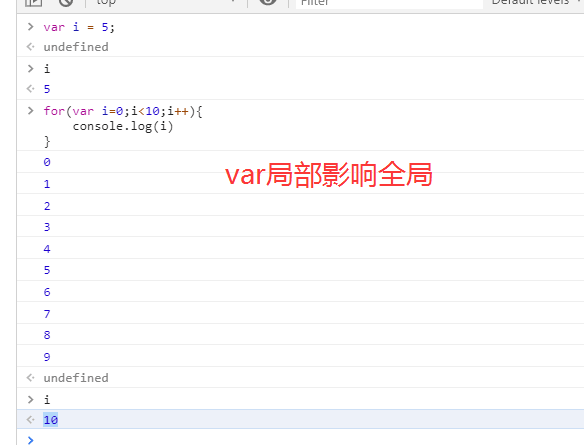
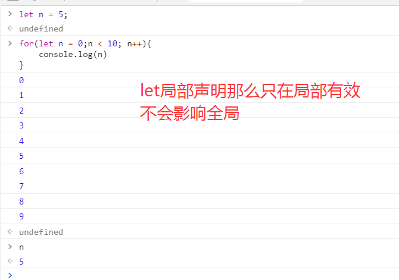
js中常量
const用来声明常量，不能被修改
const a=3.141412;
undefined
a=3
VM862:1 Uncaught TypeError: Assignment to constant variable.
at <anonymous>:1:2js中数据类型
数值类型
js拥有动态类型，可以类型转换
var x; // 此时是undefined
var x = 1; // 此时x是数字
var x = "se"; // 此时x是字符串JavaScript不区分整型和浮点型，就只有一种数字类型。
var x = 1;
undefined
typeof x // typeof 用来查看js数据类型
"number"
x = 12.22
12.22
typeof x
"number"
x = "qwe"
"qwe"
typeof x
"string"还有一种NaN，表示不是一个数字（Not a Number），也是数值类型
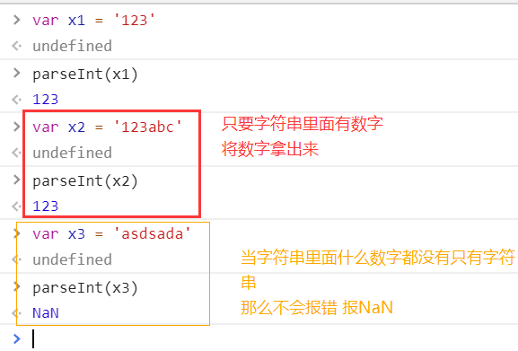
字符类型
var name = 'cwz'
undefined
var info = 'qwe'
undefined
name + info
"cwzqwe"注：js中推荐使用加号做字符串的拼接
字符串常用方法
| 方法 | 说明 |
|---|---|
| .length | 返回长度 |
| .trim() | 只能移除空白，不能移除其他 |
| .trimLeft() | 移除左边的空白 |
| .trimRight() | 移除右边的空白 |
| .charAt(n) | 返回第n个字符 |
| .concat(value, ...) var a1 = 'hello' var a2 = 'world' a1.concat(a2) < "helloworld" |
拼接 |
| .indexOf(substring, start) | 按值取索引，找不到值返回-1 |
| .substring(from, to) a1.substring(1) "ello" |
根据索引取后面全部 |
| .slice(start, end) | 切片 |
| .toLowerCase() | 小写 |
| .toUpperCase() | 大写 |
| .split(delimiter, limit) | 分割 |
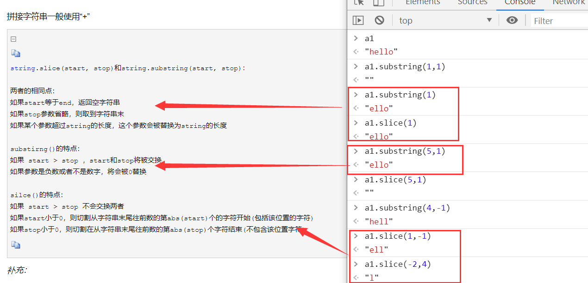
模板字符串
ES6中引入了模板字符串。模板字符串（template string）是增强版的字符串，用反引号（`）标识。它可以当做普通字符串使用，也可以用来定义多行字符串，或者在字符串中嵌入变量。
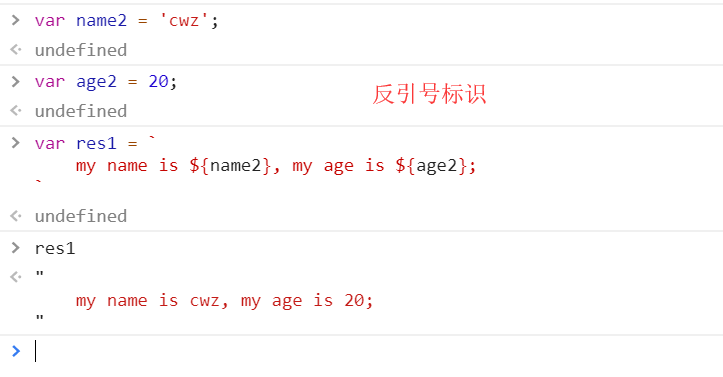
布尔值(Boolean)
js中布尔值全部小写
var a = true;
var b = false;与python类似，0、null、undefined、NaN、空字符串都是false
null和undefined
- null表示值是空，一般在需要指定或清空一个变量时才会使用，如 name=null;
- undefined表示声明一个变量但未初始化，没有给他赋值
对象
JavaScript 中的所有事物都是对象：字符串、数值、数组、函数...此外，JavaScript 允许自定义对象。
JavaScript 提供多个内建对象，比如 String、Date、Array 等等。
对象只是带有属性和方法的特殊数据类型。
数组
数组对象的作用是：使用单独的变量名来存储一系列的值。类似于Python中的列表。
var a = [123, "ABC"];
console.log(a[1]); // 输出"ABC"常用方法
| 方法 | 说明 |
|---|---|
| .length | 数组的大小 |
| .push(ele) | 尾部追加元素 |
| .pop() | 获取尾部的元素 |
| .unshift(ele) | 头部插入元素 |
| .shift() | 头部移除元素 |
| .slice(start, end) | 切片 |
| .reverse() | 反转 |
| .join(seq) | 将数组元素连接成字符串 |
| .concat(val, ...) | 连接数组 |
| .sort() | 排序 |
| .forEach() | 将数组的每个元素传递给回调函数 |
| .splice() | 删除元素，并向数组添加新元素。 |
| .map() | 返回一个数组元素调用函数处理后的值的新数组 |
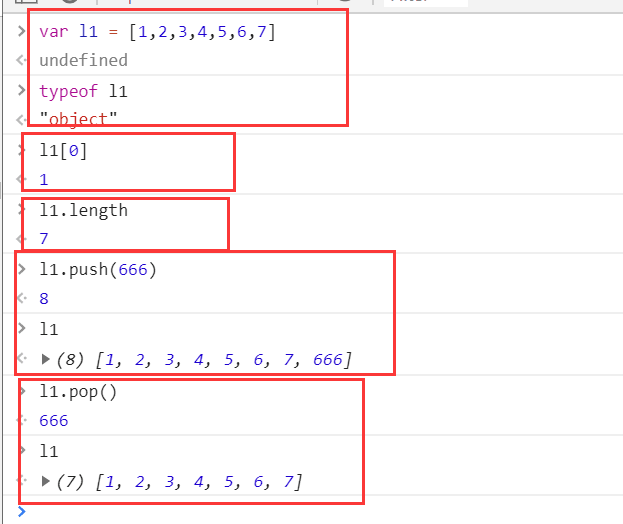
forEach()
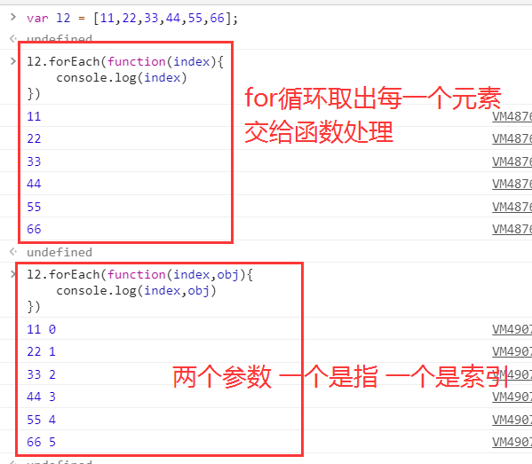
splice()
splice(index,howmany,item1,.....,itemX)
参数：
| 参数 | 描述 |
|---|---|
| index | 必需。规定从何处添加/删除元素。 该参数是开始插入和（或）删除的数组元素的下标，必须是数字。 |
| howmany | 必需。规定应该删除多少元素。必须是数字，但可以是 "0"。 如果未规定此参数，则删除从 index 开始到原数组结尾的所有元素。 |
| item1, ..., itemX | 可选。要添加到数组的新元素 |
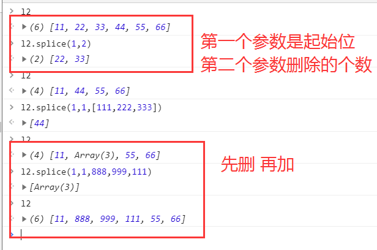
map()
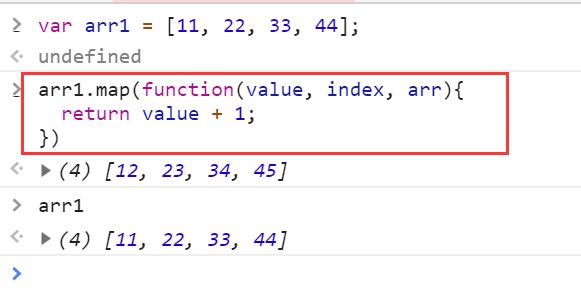
运算符
算术运算符
+ - * / % ++ --
var x=10;
var res1=x++;
var res2=++x;
res1;
10
res2;
12
这里由于的x++和++x在出现赋值运算式，x++会先赋值再进行自增1运算，而++x会先进行自增运算再赋值！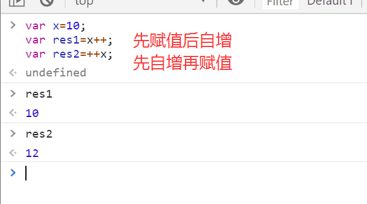
比较运算符
> >= < <= != == === !===
1 == “1” // true 弱等于
1 === "1" // false 强等于
//上面这张情况出现的原因在于JS是一门弱类型语言(会自动转换数据类型)，所以当你用两个等号进行比较时，JS内部会自动先将
//数值类型的1转换成字符串类型的1再进行比较，所以我们以后写JS涉及到比较时尽量用三等号来强制限制类型，防止判断错误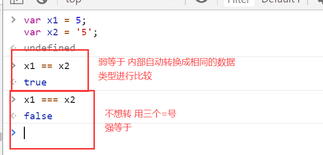
逻辑运算符
&& || ! //与、或、非赋值运算符
= += -= *= /=流程控制
if else
var age = 20;
if (age > 18){
console.log('成年了');
}else{
console.log('未成年')
}
成年了多分支结构
var age = 23;
if (age > 23){
console.log('猜大了');
}else if (age == 23){
console.log('猜对了');
}else {
console.log('猜小了');
}
猜对了switch
var day = new Date().getDay();
switch (day) {
case 0:
console.log("Sunday");
break;
case 1:
console.log("Monday");
break;
default:
console.log("...")
}
Sundayswitch中的case子句通常都会加break语句，否则程序会继续执行后续case中的语句。
for循环
for (var i=0; i<10; i++){
console.log(i);
}
// 循环打印0-9三元运算
var a = 1;
var b = 2;
var c = a > b ? a : b
undefined
c
2
// 判断条件 ？成立 ：不成立函数
函数定义
// 普通函数
function f1() {
console.log('你好啊')；
}
// 调用函数与python一样 函数名()
// 有参函数
function f2(a,b){
console.log(arguments);
console.log(a,b)
}
// arguments能接收所有传过来的参数，组成数组的形式
// 带返回值的函数
function sum(a, b){
return a + b;
}
sum(1, 2); // 返回3，调用函数
// 匿名函数
var sum = function(a, b){
return a + b;
}
sum(1, 2);
// 立即执行函数
(function(a,b){
return a + b;
}) (1,2)补充：ES6中允许使用箭头（=>）定义函数
var f = v => v;
// 等同于
var f = function(v){
return v;
}
var f = () => 5;
// 等同于
var f = function(){return 5};
var sum = (num1, num2) => num1 + num2;
// 等同于
var sum = function(num1, num2){
return num1 + num2; //这里的return只能返回一个值，如果想返回多个值需要自己手动给他们包一个数组或对象中
}函数的全局变量和局部变量
局部变量：
在JavaScript函数内部声明的变量（使用 var）是局部变量，所以只能在函数内部访问它（该变量的作用域是函数内部）。只要函数运行完毕，本地变量就会被删除。
全局变量：
在函数外声明的变量是全局变量，网页上的所有脚本和函数都能访问它。
变量生存周期：
JavaScript变量的生命期从它们被声明的时间开始。
局部变量会在函数运行以后被删除。
全局变量会在页面关闭后被删除
作用域
与python一样
内置对象和方法
JavaScript的对象（Object）本质上是键值对的集合（Hash结构），但是只能用字符串作为键。
其实就是字典
var dic = {'name': 'cwz', 'age': 20}
{name: "cwz", age: 20}
自定义对象
定义对象关键字是 new
var myObject = new Object(); // 创建一个myObject对象
myObject.username = 'cwz'; // myObject对象的username属性
myObject.password = 123; // myObject对象的password属性Date对象
// 不指定参数，类似于时间戳
var d1 = new Date();
console.log(d1.toLocaleString()) // 结果为：2019/11/17 下午12:17:47
console.log(d1.toLocaleDateString()) // 结果为：2019/11/17
下面是了解
//方法2：参数为日期字符串
var d2 = new Date("2004/3/20 11:12");
console.log(d2.toLocaleString());
var d3 = new Date("04/03/20 11:12");
console.log(d3.toLocaleString());
//方法3：参数为毫秒数
var d3 = new Date(5000);
console.log(d3.toLocaleString());
console.log(d3.toUTCString());
//方法4：参数为年月日小时分钟秒毫秒
var d4 = new Date(2004,2,20,11,12,0,300);
console.log(d4.toLocaleString()); //毫秒并不直接显示Date对象的方法
var d = new Date();
//getDate() 获取日
//getDay () 获取星期
//getMonth () 获取月（0-11）
//getFullYear () 获取完整年份
//getYear () 获取年
//getHours () 获取小时
//getMinutes () 获取分钟
//getSeconds () 获取秒
//getMilliseconds () 获取毫秒
//getTime () 返回累计毫秒数(从1970/1/1午夜)注意：getMonth () 获取月份是0-11
Json对象
var obj = {'username':'cwz', 'password':'123', 'num': null}
// 对象转化为Json字符串
var res1 = JSON.stringify(obj) // "{"username":"cwz","password":"123","num":null}"
// JSON字符串转换成对象
var res2 = JSON.parse(res1) // {username: "cwz", password: "123", num: null}RegExp对象
// 定义正则表达式两种方式
var reg1 = new RegExp("^[a-zA-Z][a-zA-Z0-9]{5,11}");
var reg2 = /^[a-zA-Z][a-zA-Z0-9]{5,9}$/;
// 正则校验数据
reg1.test('jason666')
reg2.test('jason666')
/*第一个注意事项，正则表达式中不能有空格*/
// 全局匹配
var s1 = 'egondsb dsb dsb';
s1.match(/s/)
s1.match(/s/g)
var reg2 = /^[a-zA-Z][a-zA-Z0-9]{5,9}$/g
reg2.test('egondsb');
reg2.test('egondsb');
reg2.lastIndex;
/*第二个注意事项，全局匹配时有一个lastIndex属性*/
// 校验时不传参数
var reg2 = /^[a-zA-Z][a-zA-Z0-9]{5,9}$/
reg2.test();
reg2.test(undefined);
var reg3 = /undefined/;
reg3.test();